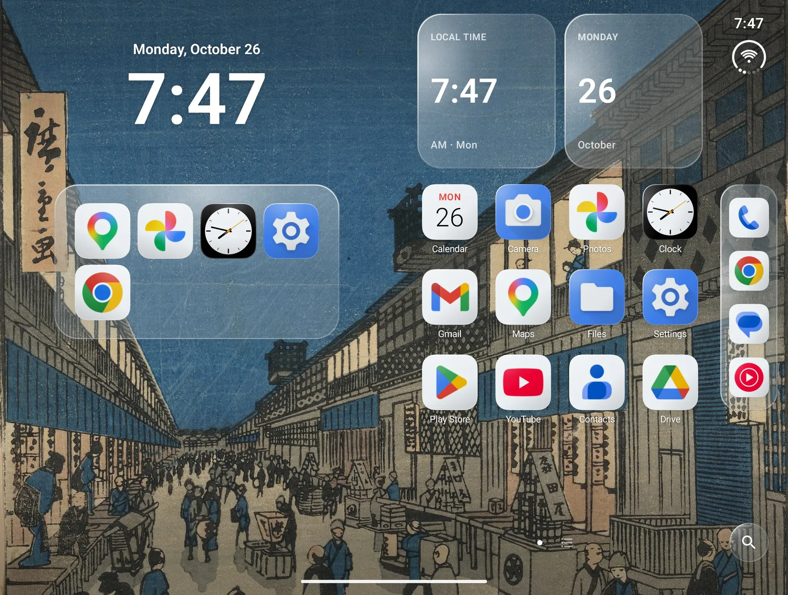
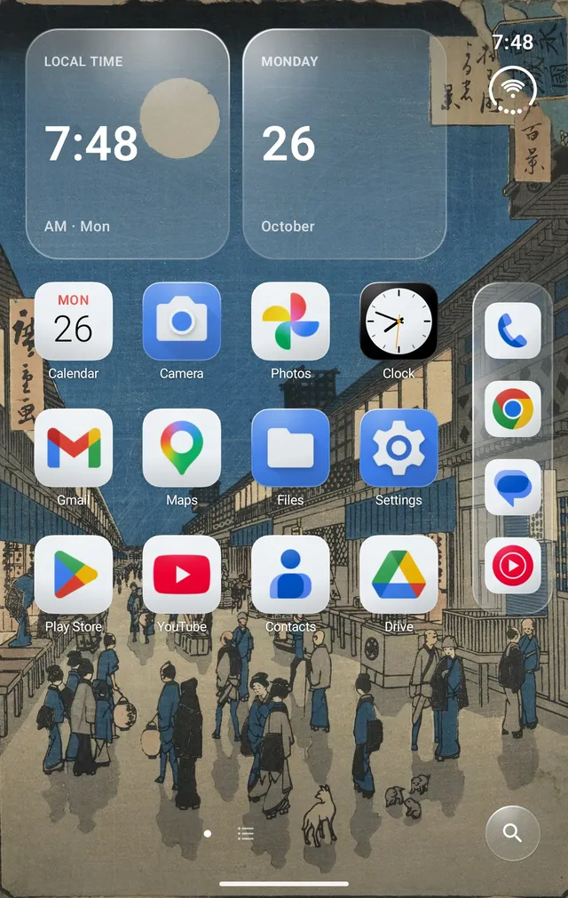
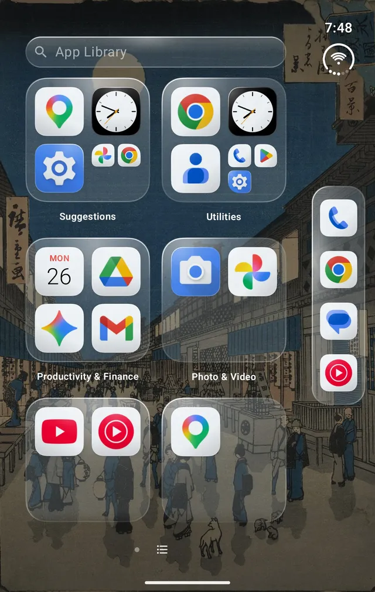
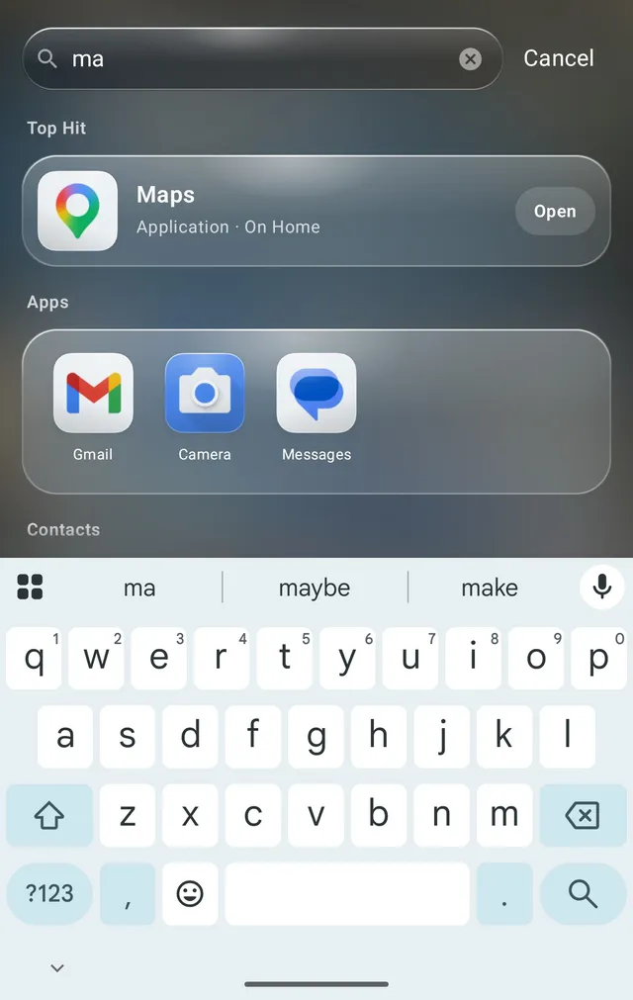

Twofold: Foldable Launcher
Home, made for
the fold.
A two-panel Home screen in frosted glass, with one layout for the cover and inner screens. Made for the Galaxy Z Fold8; works on other Android phones and tablets too.
One purchase · No ads · No account · Open source


Features.
-
The Side Bar
The time, battery and your dock along the edge, folded or open.
-
The App Library
Every app, sorted into categories automatically.
-
Widget stacks
Swipe through stacked widgets in place, with a full page of them beside Home.
-
Search
Swipe down for apps, contacts, settings, quick math and the web.


Your Home stays on your phone.
Twofold doesn't request internet access, so your layout, settings and suggestions never leave the device. There's no account and no ads or analytics, and the source is on GitHub under the MIT license.
Questions.
Which phones does Twofold work on?
Twofold was made first for the Galaxy Z Fold8 and works on other Android foldables, phones and tablets running Android 12 or later.
How much does Twofold cost?
Twofold is a one-time purchase on Google Play, with no ads, subscriptions or in-app purchases. The source code is MIT licensed, so you can also build it yourself for free.
What permissions does it need?
None to get started. Notification access adds badges, the gestures service opens notifications and Quick Settings from Home, usage access improves suggestions, and contacts and calendar power search and the Up Next widget. Each one is explained before you grant it. See every permission.
How do I switch back to my old Home screen?
Open Android's Settings, go to Apps, then Default apps, and choose another Home app. Your Twofold layout stays put if you come back.